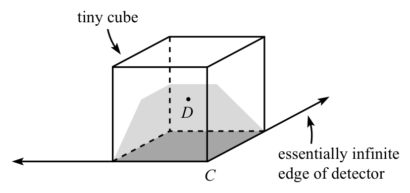
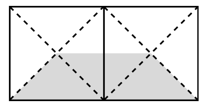
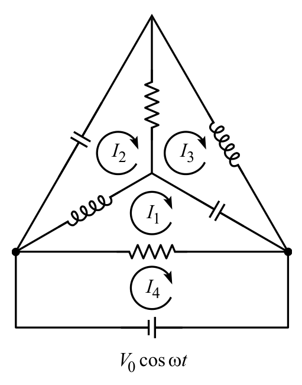
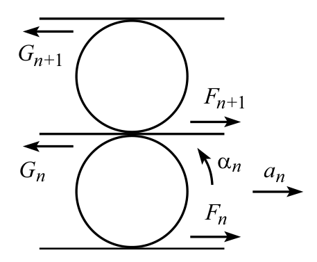

제10회 Boston Area Undergraduate Physics Competition, 2004년 4월 24일 — 풀이(Solutions)
가장 좋은 것부터 가장 나쁜 것 순서로, 전략의 순서는 (ii), (iii), (i)이다. 이는 운동량 보존(conservation of momentum)을 이용해 보일 수 있다. 썰매와 눈에 작용하는 외부 수평력이 없으므로, 썰매와 눈을 합한 전체 운동량은 시간에 따라 일정하다.
따라서 전략 (ii)가 전략 (iii)보다 낫다. (ii)의 눈은 결국 앞 방향 운동량을 갖지 않는 반면, (iii)의 눈은 썰매와 함께 계속 앞으로 움직이기 때문이다. 따라서 (ii)의 눈은 (iii)의 눈보다 운동량이 작으므로, (ii)의 썰매는 (iii)의 썰매보다 운동량이 커야 한다.
전략 (iii)이 전략 (i)보다 나은 이유는 다음과 같다. 전략 (i)에서 눈송이를 썰매에서 쓸어 내면, 그 눈송이는 처음에는 썰매와 함께 마찰 없는 얼음 위를 미끄러져 가므로 썰매와 같은 앞 방향 속력을 가진다. 그러나 다음 눈송이가 썰매에 떨어지면 썰매는 느려진다. 따라서 쓸어 낸 눈송이는 이제 썰매보다 더 큰 앞 방향 속력을 가진다. 그러므로 썰매는 썰매와 눈송이로 이루어진 계의 질량중심(center of mass) 속력보다 느린 속력으로 움직인다. 그런데 이 질량중심 속력이 바로 (iii)에서의 썰매 속력이다.
팔을 휘두르는 것은 실제로 도움이 된다. 발에 대한 몸의 각운동량(angular momentum)을 생각하자. 발에 작용하는 마찰력은 발에 대해 돌림힘(torque)을 주지 않으므로, 외부 돌림힘은 중력에 의한 것(이것이 넘어지게 만드는 원인이다)뿐이다. 그러나 충분히 짧은 시간 동안에는 이 돌림힘이 각가속도를 별로 일으키지 않으므로, 발에 대한 각운동량은 근사적으로 일정하다.
이제 손이 가장 낮은 점에서는 앞으로, 가장 높은 점에서는 뒤로 움직이는 방향으로 팔을 빙빙 돌리기 시작한다고 하자. 그러면 오른손 법칙(right-hand rule)에 따라 팔은 오른쪽을 향하는 각운동량을 가진다. 그런데 각운동량이 근사적으로 일정하므로, 이제 무언가가 왼쪽을 향하는 각운동량을 가져야 한다. 그 무언가는 바로 당신이다. 따라서 당신은 발에 대해 “앞쪽으로” 회전한다. 다시 말해, (팔을 충분히 빠르게 돌린다면) 뒤로 넘어지지 않는다.
중요한 것은 팔의 각운동량의 변화라는 것에 유의하라. 다시 말해, 팔 휘두르기는 시작할 때만 도움이 된다. 팔이 최대 속력에 이르면(실제로는 이것이 매우 빨리 일어난다) 휘두르기는 더 이상 도움이 되지 않는다. 그러나 그때쯤이면 질량중심을 발 위로 되돌려 놓는 데 성공했기를 바란다.
밧줄의 전체 질량을 $m$이라 하고, 그 가운데 비율 $f$가 공중에 매달려 있다고 하자. 이 부분의 오른쪽 절반을 생각하자. 그 무게 $(f/2)mg$는, 이 부분이 오른쪽 받침대에 닿아 있는 밧줄 부분과 만나는 점에서의 장력의 수직 성분 $T\sin\theta$와 균형을 이루어야 한다. 따라서 그 점에서의 장력은 $T=(f/2)mg/\sin\theta$이다.
이제 오른쪽 받침대에 닿아 있는, 질량 $(1-f)m/2$인 밧줄 부분을 생각하자. 받침대가 가하는 수직항력(normal force)은 $N=(1-f)(mg/2)\cos\theta$이므로, $\mu=1$이기 때문에 최대 마찰력도 $(1-f)(mg/2)\cos\theta$와 같다. 이 마찰력은 면을 따른 중력 성분 $(1-f)(mg/2)\sin\theta$와 위에서 구한 아래끝의 장력의 합과 균형을 이루어야 한다. 따라서
\[\frac12(1-f)mg\cos\theta=\frac12(1-f)mg\sin\theta+\frac{fmg}{2\sin\theta}.\tag{1}\]이로부터
\[f=\frac{F(\theta)}{1+F(\theta)},\qquad\text{여기서}\quad F(\theta)\equiv\cos\theta\sin\theta-\sin^2\theta.\tag{2}\]직접 확인할 수 있듯이, 이 $f$의 표현은 $F(\theta)$의 단조 증가 함수이다. 따라서 최대 $f$는 $F(\theta)$가 가능한 한 클 때 얻어진다. 배각 공식(double-angle formula)을 쓰면 $F(\theta)$를 다음과 같이 다시 쓸 수 있다.
\[F(\theta)=\frac12(\sin2\theta+\cos2\theta-1).\tag{3}\]이것의 도함수는 $\cos2\theta-\sin2\theta$이며, 이는 $\tan2\theta=1$일 때 0이다. 따라서
\[\theta_{\rm max}=22.5^\circ.\tag{4}\]그러면 식 (3)으로부터 $F(\theta_{\rm max})=(\sqrt2-1)/2$이고, 식 (2)로부터
\[f_{\rm max}=\frac{\sqrt2-1}{\sqrt2+1}=(\sqrt2-1)^2=3-2\sqrt2\approx0.172.\tag{5}\]먼저 점 $B$를 생각하자. 이 점은 한 변의 길이가 $d$인 정육면체의 중심이며, 이 정육면체의 한 면이 검출기이다. 입자에서 나오는 복사(radiation)는 등방적(isotropic)이므로, 그 $1/6$이 정육면체의 각 면을 통과한다. 따라서 입자가 점 $B$에 있을 때 입자 복사의 $1/6$이 정사각형에서 검출된다.
다음으로 점 $A$를 생각하자. 이 점은 한 변의 길이가 $2d$인 정육면체의 중심이다. 검출기는 이 정육면체의 한 면의 4분의 1을 차지한다. 이 사실을 위의 논리와 합치면, 입자가 점 $A$에 있을 때 입자 복사의 $(1/4)(1/6)=1/24$이 정사각형에서 검출된다.
마지막으로 $C$에 매우 가까운 점(이를 $D$라 하자)을 생각하자. 이 경우는 조금 더 까다롭다. 점 $D$는 검출기의 모서리에 있는 아주 작은 정사각형을 밑면으로 가지는 아주 작은 정육면체의 중심이다. 이 정육면체에서 어느 영역이 검출기에 닿는 복사에 해당하는가? 위의 논리로부터, 입자 복사의 $1/6$은 밑면을 통과한다. 정육면체에서 관련된 나머지 영역은 아래 그림에서 옅게 칠한 영역으로 나타냈다.

옅게 칠한 영역의 위쪽 수평 경계는 검출기의 먼 두 모서리에 해당하며, 이 모서리들은 사실상 무한히 멀리 있다. 두 대각선 경계는 점 $C$에서 뻗어 나가는 검출기의 두 모서리에 해당한다.1 옅게 칠한 영역은 두 옆면 넓이의 $3/8$을 덮는데, 그림처럼 이 면들을 펼쳐 보면 알 수 있다.

이 그림에 보인 여덟 개의 삼각형에는 같은 양의 복사가 닿으므로, 칠한 넓이 $3/8$은 이 면들을 통과하는 복사의 $3/8$에 해당한다. 이 두 면은 정육면체의 $1/3$을 이루므로, 입자 복사 가운데 검출기에 닿는 전체 비율은 $1/6+(3/8)(1/3)=7/24$이다.
1 이 대각선 경계들은 실제로 직선이다. 각 경계가 두 평면의 교선으로 정해진다는 점에 주목하면 알 수 있는데, 한 평면은 작은 정육면체의 한 면이고, 다른 평면은 (점 $C$에서 뻗어 나가는) 검출기의 한 모서리와 점 $D$가 정하는 평면이다.
사면체를 아래 그림처럼(원래의 3차원 그림과 똑같아 보인다) 평면 회로로 생각해도 된다. 네 개의 고리 전류(loop current)를 그림과 같이 잡자.

$\omega=1/\sqrt{LC}$이고 $R=\sqrt{L/C}$이므로, 저항기, 인덕터, 축전기의 임피던스(impedance)는 다음과 같은 꼴이다.
\[\begin{aligned}Z_R&=R,\\Z_L&=i\omega L=i\sqrt{\frac LC}=iR,\\Z_C&=\frac{-i}{\omega C}=-i\sqrt{\frac LC}=-iR.\end{aligned}\tag{6}\]그러면 고리를 한 바퀴 도는 전압 강하가 0이라는 사실을 나타내는 네 개의 고리 방정식은
\[\begin{aligned}(I_1-I_4)R+(I_1-I_2)(iR)+(I_1-I_3)(-iR)&=0,\\I_2(-iR)+(I_2-I_3)R+(I_2-I_1)(iR)&=0,\\I_3(iR)+(I_3-I_1)(-iR)+(I_3-I_2)R&=0,\\(I_4-I_1)R&=V_0.\end{aligned}\tag{7}\]이들은 다음과 같이 간단해진다.
\[\begin{aligned}(I_1-I_4)+i(I_3-I_2)&=0,\\(I_2-I_3)-iI_1&=0,\\(I_3-I_2)+iI_1&=0,\\(I_4-I_1)&=V_0/R.\end{aligned}\tag{8}\]둘째 식과 셋째 식은 동등하므로, 실제로는 네 개의 미지 전류에 대해 세 개의 방정식만 있다(이에 대해서는 아래 참고에서 더 다룬다). 둘째 식에 $i$를 곱해 첫째 식에 더하면 $2I_1-I_4=0\Longrightarrow I_1=I_4/2$이다. 이것을 마지막 식에 대입하면 회로 전체를 흐르는 전류의 진폭은
\[I_4=\frac{2V_0}{R}.\tag{9}\]따라서 회로 전체의 유효 임피던스는 $R/2$이므로, 그림의 위쪽 다섯 개의 선은 실질적으로 아래쪽 저항기 $R$과 병렬로 연결된 저항 $R$인 저항기처럼 작용한다는 것을 알 수 있다.
참고(Remark): 위의 네 방정식은 차 $I_2-I_3$을 $iV_0/R$로 정하지만, $I_2$와 $I_3$을 각각 정하지는 않는다. 이 두 전류는 차가 $iV_0/R$이기만 하면 실제로 어떤 값이든 가질 수 있다. 두 값을 똑같이 증가시키는 것은 단지 위쪽 두 고리(“2”와 “3” 고리)를 합친 고리에 전류를 더 흘려보내는 것에 해당하는데, 이 고리는 공명 상태(resonance)에 있는(왜냐하면 $\omega=1/\sqrt{LC}$이므로) 두 인덕터와 두 축전기로 이루어져 있다.
입자가 오른쪽으로 미끄러져 떨어진다고 가정하자. 입자의 수평 속도와 수직 속도를 $v_x$와 $v_y$라 하고, 각각 오른쪽과 아래쪽을 양으로 잡자. 반구의 속도를 $V_x$라 하고, 왼쪽을 양으로 잡자. 운동량 보존으로부터
\[mv_x=MV_x\qquad\Longrightarrow\qquad V_x=\left(\frac mM\right)v_x.\tag{10}\]입자가 반구의 꼭대기로부터 각 $\theta$만큼 내려온 위치에 있는 순간을 생각하자. 국소적으로 입자는 사실상 각 $\theta$로 기울어진 평면 위에 있으므로, 세 속도 성분은 다음과 같은 관계를 가진다.
\[\frac{v_y}{v_x+V_x}=\tan\theta\qquad\Longrightarrow\qquad v_y=\tan\theta\left(1+\frac mM\right)v_x.\tag{11}\]이것이 성립하는 이유를 보려면 반구의 좌표계에서 보면 된다. 그 좌표계에서 입자는 오른쪽으로 속력 $v_x+V_x$, 아래쪽으로 속력 $v_y$로 움직인다. 식 (11)은 입자가 반구 위에 머문다는 구속 조건(constraint)을 나타내며, 반구는 주어진 위치에서 각 $\theta$로 기울어져 있다.
이제 에너지 보존을 적용하자. $\theta$로 나타내면 입자는 거리 $R(1-\cos\theta)$만큼 떨어졌으므로, 에너지 보존으로부터
\[\frac12m(v_x^2+v_y^2)+\frac12MV_x^2=mgR(1-\cos\theta).\tag{12}\]식 (10)과 (11)을 이용해 $v_x^2$에 대해 풀면
\[v_x^2=\frac{2gR(1-\cos\theta)}{(1+r)\Big(1+(1+r)\tan^2\theta\Big)},\qquad\text{여기서}\quad r\equiv\frac mM.\tag{13}\]$\theta$의 이 함수는 $\theta=0$에서 0으로 시작하여 $\theta$가 커지면 증가한다. 그다음 최댓값에 이른 뒤 $\theta=\pi/2$에서 다시 0으로 내려간다. 그러나 $v_x$는 실제로 감소할 수 없다. 입자를 왼쪽으로 당길 수 있는 힘이 없기 때문이다. 따라서 실제로 일어나는 일은, 접촉이 유지되는 동안 존재하는 0이 아닌 수직항력 때문에 처음에는 $v_x$가 증가하는 것이다. 그러나 이윽고 $v_x$는 최대에 이르는데, 이는 수직항력이 0이 되어 입자가 반구와의 접촉을 잃는 것에 해당한다. 그 뒤 입자는 일정한 $v_x$로 공중을 날아간다. 그러므로 목표는 식 (13)의 $v_x^2$이 최대가 되는 각 $\theta$를 구하는 것이다. 도함수를 0으로 놓으면
\[\begin{aligned}&0=\Big(1+(1+r)\tan^2\theta\Big)\sin\theta-(1-\cos\theta)(1+r)\frac{2\tan\theta}{\cos^2\theta}\\\Longrightarrow\quad&0=\Big(1+(1+r)\tan^2\theta\Big)\cos^3\theta-2(1+r)(1-\cos\theta)\\\Longrightarrow\quad&0=\cos^3\theta+(1+r)(\cos\theta-\cos^3\theta)-2(1+r)(1-\cos\theta)\\\Longrightarrow\quad&0=r\cos^3\theta-3(1+r)\cos\theta+2(1+r).\end{aligned}\tag{14}\]이것이 $\theta$를 정하는 구하려던 방정식이다. 이것은 삼차 방정식이므로 일반적으로 $\theta$에 대해 그렇게 쉽게 풀 수는 없다. 그러나 $r=1$인 특별한 경우에는
\[0=\cos^3\theta-6\cos\theta+4.\tag{15}\]살펴보면 $\cos\theta=2$가 (비물리적인) 해이므로
\[(\cos\theta-2)(\cos^2\theta+2\cos\theta-2)=0.\tag{16}\]이차 방정식의 물리적인 근은
\[\cos\theta=\sqrt3-1\approx0.732\qquad\Longrightarrow\qquad\theta\approx42.9^\circ.\tag{17}\]다른 풀이(Alternate solution): 반구의 기준틀에서 입자의 수평 속력은 $v_x+V_y=(1+r)v_x$이다. 이 기준틀에서의 전체 속력은 이 수평 속력을 $\cos\theta$로 나눈 것과 같으므로
\[v=\frac{(1+r)v_x}{\cos\theta}.\tag{18}\](역주: 원문의 “$v_x+V_y$”는 앞의 표기에 따르면 $v_x+V_x$를 뜻한다.)
입자는 수직항력이 0이 될 때 반구를 떠난다. 따라서 지름 방향의 $F=ma$ 방정식으로부터
\[mg\cos\theta=\frac{mv^2}{R}.\tag{19}\]반구의 가속 좌표계에서 옆방향 관성력(fictitious force)을 무시했다는 점이 걱정될 수도 있다. 그러나 입자가 접촉을 잃는 순간부터 반구는 가속되고 있지 않다. 수직항력이 0이 되었기 때문이다. 따라서 식 (19)는 고정된 반구에 대한 익숙한 문제에서와 정확히 같은 모양이며, 두 문제의 차이는 $v$의 계산에 있다.
식 (13)과 (18)을 식 (19)에 쓰면
\[mg\cos\theta=\frac{m(1+r)^2}{R\cos^2\theta}\cdot\frac{2gR(1-\cos\theta)}{(1+r)\Big(1+(1+r)\tan^2\theta\Big)}.\tag{20}\]이를 정리하면
\[\Big(1+(1+r)\tan^2\theta\Big)\cos^3\theta=2(1+r)(1-\cos\theta),\tag{21}\]이며, 이는 식 (14)의 둘째 줄과 같다. 풀이는 위와 같이 진행된다.
참고(Remark): $r\equiv m/M$ 값의 몇 가지 특별한 경우를 살펴보자. $r\to0$인 극한(다시 말해, 반구가 사실상 볼트로 고정되어 있는 경우)에서 식 (14)는
\[\cos\theta=2/3\qquad\Longrightarrow\qquad\theta\approx48.2^\circ,\tag{22}\]를 주며, 이는 익숙해 보일 수도 있는 결과이다. $r\to\infty$인 극한에서 식 (14)는 다음으로 줄어든다.
\[0=\cos^3\theta-3\cos\theta+2\qquad\Longrightarrow\qquad0=(\cos\theta-1)^2(\cos\theta+2).\tag{23}\]따라서 $\theta=0$이다. 다시 말해, 반구는 즉시 매우 빠르게 왼쪽으로 밀려나 버린다.
다른 $r$ 값에 대해서는 삼차 방정식의 근의 공식을 쓰거나(매우 지저분하다), 그냥 수치적으로 계산하여 식 (14)를 풀 수 있다. 몇 가지 수치 결과는 다음과 같다.
| $r$ | $\cos\theta$ | $\theta$ |
|---|---|---|
| $0$ | $.667$ | $48.2^\circ$ |
| $1/2$ | $.706$ | $45.1^\circ$ |
| $1$ | $.732$ | $42.9^\circ$ |
| $2$ | $.767$ | $39.9^\circ$ |
| $10$ | $.858$ | $30.9^\circ$ |
| $100$ | $.947$ | $18.8^\circ$ |
| $1000$ | $.982$ | $10.8^\circ$ |
| $\infty$ | $1$ | $0^\circ$ |
한 줄에 있는 두 원통은 똑같이 움직이므로, 이들을 질량 $m=2M$인 하나의 원통으로 다루면 된다. 판들이 원통에 가하는 힘을 그림과 같이 이름 붙이자. “$F$”는 주어진 원통 아래의 판이 가하는 힘이고, “$G$”는 그 위의 판이 가하는 힘이다.

판에는 질량이 없으므로, 뉴턴의 제3법칙(Newton's third law)에 의해 $F_{n+1}=G_n$이라는 것에 유의하라.
전략은 각 원통의 선가속도와 각가속도를 그 아래 원통의 가속도로 나타내어 푸는 것이다. 두 양을 구하고자 하므로, 연속한 두 원통의 가속도를 관계 짓는 방정식이 두 개 필요하다. 한 방정식은 $F=ma$, $\tau=I\alpha$, 뉴턴의 제3법칙의 조합에서 나온다. 다른 하나는 미끄러지지 않는 조건에서 나온다.
$a$와 $\alpha$의 양의 방향을 그림과 같이 정하면, $n$번째 원통에 대한 $F=ma$로부터
\[F_n-G_n=ma_n,\tag{24}\]그리고 $n$번째 원통에 대한 $\tau=I\alpha$로부터
\[(F_n+G_n)R=\frac12mR^2\alpha_n\qquad\Longrightarrow\qquad F_n+G_n=\frac12mR\alpha_n\tag{25}\]앞의 두 식을 $F_n$과 $G_n$에 대해 풀면
\[\begin{aligned}F_n&=\frac12\left(ma_n+\frac12mR\alpha_n\right),\\G_n&=\frac12\left(-ma_n+\frac12mR\alpha_n\right).\end{aligned}\tag{26}\]그런데 $F_{n+1}=G_n$임을 알고 있다. 따라서
\[a_{n+1}+\frac12R\alpha_{n+1}=-a_n+\frac12R\alpha_n.\tag{27}\]이제 원통이 판에 대해 미끄러지지 않는다는 사실을 이용하자. $n$번째 원통 위에 있는 판의 가속도는 $a_n-R\alpha_n$이다. 그런데 같은 판을 $(n+1)$번째 원통 아래의 판으로 보면 그 가속도는 $a_{n+1}+R\alpha_{n+1}$이다. 따라서
\[a_{n+1}+R\alpha_{n+1}=a_n-R\alpha_n.\tag{28}\]식 (27)과 (28)은 두 미지수 $a_{n+1}$과 $\alpha_{n+1}$을 $a_n$과 $\alpha_n$으로 나타내는 두 방정식의 연립 방정식이다. $a_{n+1}$과 $\alpha_{n+1}$에 대해 풀면
\[\begin{aligned}a_{n+1}&=-3a_n+2R\alpha_n,\\R\alpha_{n+1}&=4a_n-3R\alpha_n.\end{aligned}\tag{29}\]이것을 행렬 꼴로 쓰면
\[\begin{pmatrix}a_{n+1}\\R\alpha_{n+1}\end{pmatrix}=\begin{pmatrix}-3&2\\4&-3\end{pmatrix}\begin{pmatrix}a_n\\R\alpha_n\end{pmatrix}.\tag{30}\]따라서
\[\begin{pmatrix}a_n\\R\alpha_n\end{pmatrix}=\begin{pmatrix}-3&2\\4&-3\end{pmatrix}^{n-1}\begin{pmatrix}a_1\\R\alpha_1\end{pmatrix}.\tag{31}\]이제 위 행렬의 고유벡터(eigenvector)와 고윳값(eigenvalue)을 생각하자. 고윳값은 다음으로 구한다.2
\[\begin{vmatrix}-3-\lambda&2\\4&-3-\lambda\end{vmatrix}=0\qquad\Longrightarrow\qquad\lambda_\pm=-3\pm2\sqrt2.\tag{32}\](역주: 원문에는 이 문장이 “고유벡터는 다음으로 구한다(The eigenvectors are found via)”로 되어 있으나, 식 (32)가 주는 것은 고윳값이다.)
그러면 고유벡터는
\[\begin{aligned}V_+&=\begin{pmatrix}1\\\sqrt2\end{pmatrix},\qquad\lambda_+=-3+2\sqrt2\text{에 대해},\\V_-&=\begin{pmatrix}1\\-\sqrt2\end{pmatrix},\qquad\lambda_-=-3-2\sqrt2\text{에 대해}.\end{aligned}\tag{33}\]$|\lambda_-|>1$이므로 $n\to\infty$일 때 $\lambda_-^n\to\infty$라는 것에 유의하라. 이는 처음 $(a_1,R\alpha_1)$ 벡터가 $V_-$ 방향 성분을 조금이라도 가지면 $(a_n,R\alpha_n)$ 벡터들이 무한대로 간다는 뜻이다. 이는 에너지 보존에 어긋난다. 따라서 $(a_1,R\alpha_1)$ 벡터는 $V_+$에 비례해야 한다.3 즉 $R\alpha_1=\sqrt2a_1$이다. 이것을 맨 아래 판의 주어진 가속도 $a$가 $a_1+R\alpha_1$과 같다는 사실과 결합하면
\[a=a_1+\sqrt2a_1\qquad\Longrightarrow\qquad a_1=\frac{a}{\sqrt2+1}=(\sqrt2-1)a.\tag{34}\]2 $\lambda_+$는 공교롭게도 문제 2에서 구한 $f_{\rm max}$ 결과의 음수이다. 흥미로운 사실이지만, 내 생각에는 완전히 우연이기도 하다.
3 그러면 $|\lambda_+|<1$이므로 $n\to\infty$일 때 $(a_n,R\alpha_n)$ 벡터들은 0으로 간다. 또한 $\lambda_+$가 음수이므로 가속도의 부호가 한 층에서 다음 층으로 갈 때마다 바뀐다는 것에 유의하라.
참고(Remark): 원통의 관성모멘트(moment of inertia)가 $I=\beta MR^2$ 꼴인 일반적인 경우를 생각하자. 위의 논증을 쓰면, 식 (30)이 다음이 된다는 것을 보일 수 있다.
\[\begin{pmatrix}a_{n+1}\\R\alpha_{n+1}\end{pmatrix}=\frac{1}{1-\beta}\begin{pmatrix}-(1+\beta)&2\beta\\2&-(1+\beta)\end{pmatrix}\begin{pmatrix}a_n\\R\alpha_n\end{pmatrix}.\tag{35}\]그리고 고유벡터와 고윳값이 다음과 같음을 보일 수 있다.
\[\begin{aligned}V_+&=\begin{pmatrix}\sqrt\beta\\1\end{pmatrix},\qquad\lambda_+=\frac{\sqrt\beta-1}{\sqrt\beta+1}\text{에 대해},\\V_-&=\begin{pmatrix}\sqrt\beta\\-1\end{pmatrix},\qquad\lambda_-=\frac{\sqrt\beta+1}{\sqrt\beta-1}\text{에 대해}.\end{aligned}\tag{36}\]앞에서와 같이 지수적으로 커지는 해는 있을 수 없으므로, $V_+$ 해만 있어야 한다. 따라서 $R\alpha_1=a_1/\sqrt\beta$이다. 이것을 맨 아래 판의 주어진 가속도 $a$가 $a_1+R\alpha_1$과 같다는 사실과 결합하면
\[a=a_1+\frac{a_1}{\sqrt\beta}\qquad\Longrightarrow\qquad a_1=\left(\frac{\sqrt\beta}{1+\sqrt\beta}\right)a.\tag{37}\]이 결과들이 모두 위에서 얻은 $\beta=1/2$의 결과와 일치함을 확인할 수 있다.
이제 어느 층의 가속도와 그 바로 아래 층의 가속도의 비를 주는 고윳값
\[\lambda_+=\frac{\sqrt\beta-1}{\sqrt\beta+1}\tag{38}\]의 몇 가지 특별한 경우를 생각해 보자.